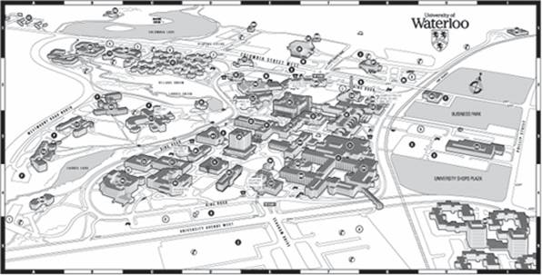

Problem E
Connect the Campus
Input: standard input
Output: standard output
Time Limit: 2 seconds
Many new buildings are under construction on the
campus of the
We will treat each building as a point specified by an x-coordinate and a y-coordinate. Each communication cable connects exactly two buildings, following a straight line between the buildings. Information travels along a cable in both directions. Cables can freely cross each other, but they are only connected together at their endpoints (at buildings).
You have been given a campus map which shows the locations of all buildings and existing communication cables. You must not alter the existing cables. Determine where to install new communication cables so that all buildings are connected. Of course, the university wants you to minimize the amount of new cable that you use.

Fig:
Input
The input file describes several test case. The description of each test case is given below:
The first line of each test case contains the number of buildings N (1<=N<=750). The buildings are labeled from 1 to N. The next N lines give the x and y coordinates of the buildings. These coordinates are integers with absolute values at most 10000. No two buildings occupy the same point. After that there is a line containing the number of existing cables M (0 <= M <= 1000) followed by M lines describing the existing cables. Each cable is represented by two integers: the building numbers which are directly connected by the cable. There is at most one cable directly connecting each pair of buildings.
Output
For each set of input, output in a single line the total length of the new cables that you plan to use, rounded to two decimal places.
Sample Input
4
103 104
104 100
104 103
100 100
1
4 2
4
103 104
104
100
104
103
100
100
1
4 2
Sample Output
4.41
4.41
(Problem-setters: G.
Kemkes & G. V. Cormack, CS Dept,
“A man running away from a tiger need not run
faster than the tiger but run faster than the friend.”